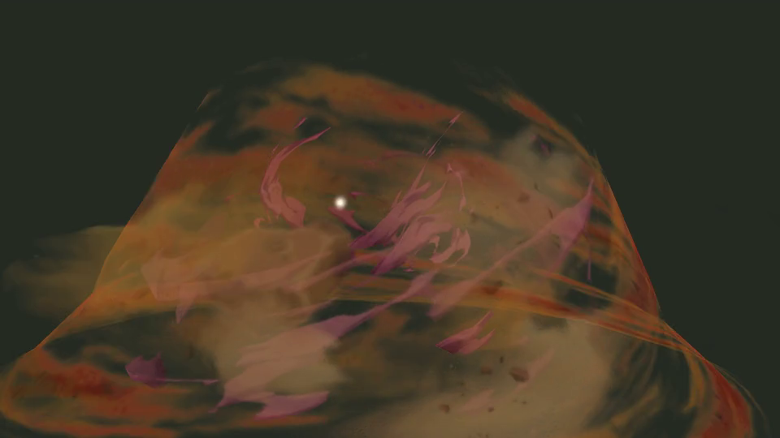

B02 / 059 · 176帧完整原序列
8 / 176 · 0.27s

23 / 176 · 0.77s
37 / 176 · 1.23s
52 / 176 · 1.73s
67 / 176 · 2.23s
81 / 176 · 2.70s
96 / 176 · 3.20s
110 / 176 · 3.67s
125 / 176 · 4.17s
140 / 176 · 4.67s
154 / 176 · 5.13s
169 / 176 · 5.63s